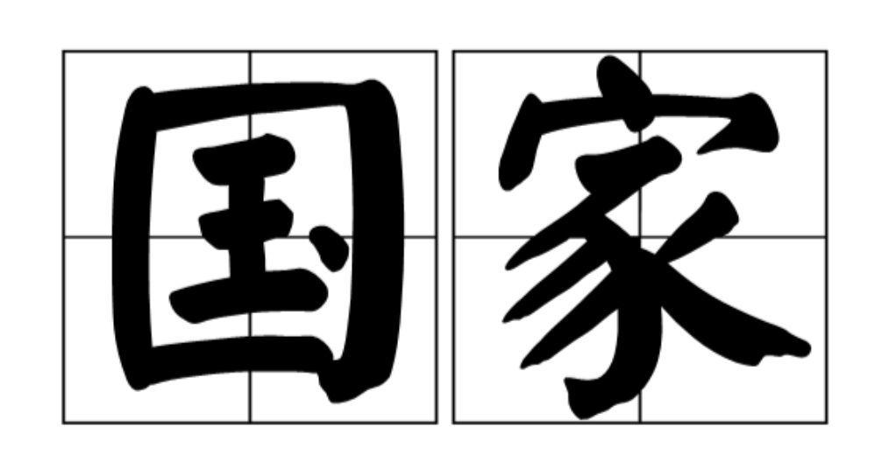
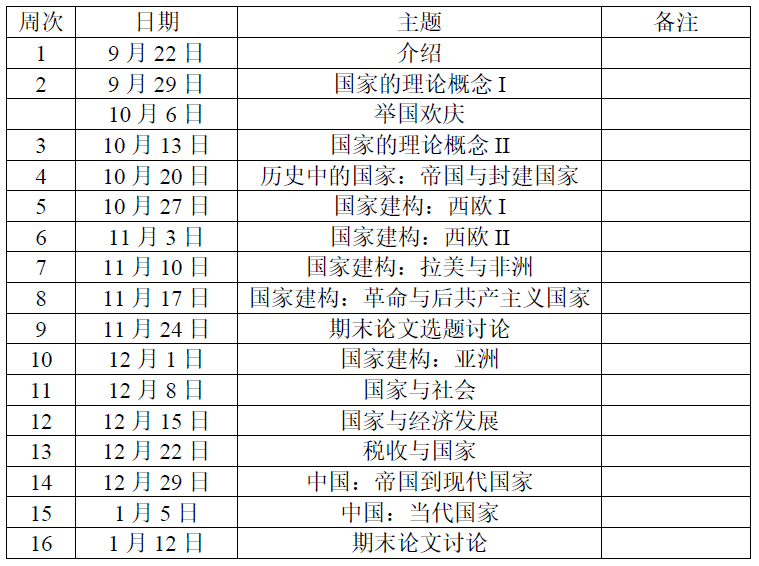

收录于合集
课程名称： 国家理论（课程号：03215540）
授课教师： 张长东副教授
联系方式： zhangchd@pku.edu.cn
Office Hour: 周三下午2:00-4:00
授课时间： 2020-2021秋季学期，周二9:00-12:00
地点： 廖凯原楼502

课程简介
国家是人类历史上最重要的制度之一，现代国家则被认为是一国经济发展和社会进步的前提条件（也可能是问题本身），被赋予了越来越多的功能和责任。因此，对国家的研究，和对诸如权力和权威、民主与威权政体的研究等，都成为了政治学的核心研究话题。国家研究的理论发展一方面反映了政治学学科发展的状态，另一方面也推动着政治学及相关学科的发展。国家理论对于政治学理论而言具有根本性的意义。正如经济学需要预设一个市场——不管是何种属性的市场——的存在才能研究个体、厂商乃至政府的行为，政治学研究需要一个揭示了的(explicit)或者至少是隐含的(implicit)国家概念作为前提基础。
本课程将研究国家理论的多个理论源流：韦伯从组织和支配的角度对国家的定义在比较政治学里长期占据主导地位，马克思的阶级统治工具的国家理论也影响深远，斯密的守夜人国家理论则被发展形成了基于理性选择的新古典国家理论，霍布斯把国家视为提供秩序的利维坦的观点也不可忽视，此外，托克维尔、埃利亚斯等人也做出了独特的贡献。
本课程将侧重讨论国家建构理论，从动态的角度看现代国家的形成和演变，及其如何影响国家形态的多样性。
这门课是关于政治制度的研究生课程，以课堂讨论为主，教师讲解（梳理脉络、话题进展、其他观点等）为辅。课程议题以学科发展的经典著作和一些前沿作品为主，适当照顾基本知识，不求面面俱到，只求与时俱进。
本课程有两大目标：一是阅读国家理论的一些经典文献以及最新进展，理解并掌握其发展脉络，能够进行批判性地阅读；二是强调方法论的自觉和研究能力的培养，促进学生对比较研究方法的掌握和运用。这两者都要通过学生的课堂讨论和作业得以提高和体现。从而为独立研究奠定理论和方法的基础。
课程要求
为达到课程目标，课程要求学生在上课前完成阅读，并带着问题积极参与课堂讨论。每周一晚上9点前，每位学生将自己在阅读中发现的问题群发给老师和其它同学，教师将择优讨论。因为每周阅读量较大，所以同学之间可以选择分工阅读，然后花15分钟介绍给大家。未完成阅读而来上课者，将很难参与到讨论中。教师将依据课程讨论的表现为平时成绩，占总分的40%。
学期论文：选课学生期末写一篇期末论文，该论文可以是一篇review article，对三个或以上近期的重要作品进行评述——课程中我们会读到一些优秀的review article，可以参考如何写。写得好估计就能改改投出去发表了，而且也能作为未来学位论文的理论回顾部分，当然前提是题目一致。要求1.5倍行距，小四字体，8000-10000字。每篇论文占总成绩的60%。
课程内容

阅读材料
1、9月22日 介绍
张长东，“比较政治学视角下的国家理论发展”，《北大政治学评论》第3辑，商务印书馆2018年1月；
2、9月29日 国家的理论概念I
-
Skocpol, Theda. 1985. “Bringing the State Back In: Strategies of Analysis in Current Research.” In Peter Evans, Dietrich Rueschemeyer, and Theda Skocpol, eds., Bringing the State Back In (NY: Cambridge University Press), pp. 3-37.《找回国家》
-
Nettl, J. P., The State as a Conceptual Variable. World Politics, 20, 1968, pp. 559-592.
-
韦伯，《以政治为业》（《学术与政治》），多个版本
Krasner, Stephen D. 1984. “Approaches to the State: Alternative Conceptions and Historical Dynamics,” Comparative Politics, vol. 16, no. 2 , pp. 223-246.
Mann, Michael, “The autonomous power of the state: its origins, mechanisms and results”, European Journal of Sociology, 25, 1984, pp. 185-213.
Vu, Tuong. Studying the State through State Formation, World Politics, Vol 62(1), 2010, pp. 148-175.
Jessop, Bob. 2016. State: past, present, future. Cambridge, Polity.
Przeworski, Adam and Michael Wallerstein. Structural dependence of the state on capital. APSR 1988 March Vol 82(1).
10月6日 举国欢庆
思考：国庆节与国家、国家理论的关系
阅读
3、10月13日 国家的理论概念II（理性选择与文化主义）
*Olson Mancur, “Dictatorship, Democracy, and Development.” The American Political Science Review 87(3):567–76, 1993.
*Levi, Margaret, Of Rule and Revenue. Berkeley: University of California Press, 1988.第一、二章，附录
-–, “The State of the Study of the State.” In Ira Katznelson and Helen Milner, eds., Political Science: The State of the Discipline. New York: W. W. Norton, 2002.
Barzel, Yoram, A theory of the state: economic rights, legal rights, and the scope of the state. Cambridge; New York: Cambridge University Press, 2002.
*诺斯等，《暴力与社会秩序》，格致出版社，1、2章
*Migdal, Joel, State in society: studying how states and societies transform and constitute one another. New York: Cambridge University Press, 2001.第一章
*克利福德·格尔茨,《尼加拉：十九世纪巴厘剧场国家(汉译人类学名著丛书) 》，商务印书馆2018年。
Spruyt, Hendrik, “The Origins, Development, and Possible Decline of the Modern State.” Annual Review of Political Science 5, no. 1: 127–49, 2002.
4、10月20日 历史中的国家：帝国与封建国家
韦伯，《支配社会学》（《经济与社会》）
佩里·安德森：《从古代到封建主义的过渡》
佩里·安德森：《绝对主义国家的系谱》，上海人民出版社2016
艾森斯塔德：《帝国的政治体系》
Steinmetz, George, The Sociology of Empires, Colonies, and Postcolonialism. Annual Review of Sociology, 2014, 40:77-103.
斯科特：《逃避统治的艺术》，三联2019
Karen Barkey. Bandits and Bureaucrats: The Ottoman Route to State Centralization, Cornell UP 1994.
5、10月27日 国家建构：西欧I（财政-军事国家）
Tilly, Charles. 1992. Coercion, Capital, and European States, AD 990-1992 (Cambridge, MA.: Blackwell Publishers)
Brewer, John. 1990. The Sinews of Power. Harvard UP.
Ertman, Thomas. 1997. Birth of the Leviathan: Building States and Regimes in Medieval and Early Modern Europe. NY: Cambridge University Press.
Dincecco, Mark, 2015. “The Rise of Effective States in Europe.” The Journal of Economic History 75(3):910–18.
Saylor, Ryan and Nicholas C. Wheeler, Paying for War and Building States: The Coalitional Politics of Debt Servicing and Tax Institutions. World Politics, 69, 2, 2017, pp. 366-408.
斯特雷耶，《现代国家的起源》，格致出版社:2011年
6、11月3日 国家建构：西欧（和美国）II （文化主义转向）
Gorski, Philip. The Disciplinary Revolution: Calvinism and the Rise of the State in Early Modern Europe. Chicago: University of Chicago Press, 2003.
*Sewell, William H. Jr. 1996. Historical events a transformations of structures: Inventing revolution at the Bastille. Theory and Society 25 (06): 841-881.
*Reed, Isaac Ariail. 2019. Performative State-Formation in the Early American Republic. American Sociological Review 84(2):334-367.
Adams, Julia, The Familial State: Ruling Families and Merchant Capitalism in Early Modern Europe. Ithaca, N.Y.: Cornell University Press, 2005.
Skowronek, Stephen. 1982. Building a New American State: The Expansion of National Administrative Capacities, 1877-1920. New York: Cambridge University Press.
7、11月10日 国家建构：拉美与非洲
*Centeno, Miguel, Blood and debt: war and the nation-state in Latin America. University Park: Pennsylvania State University Press, 2002.
Centeno, Miguel, Atul Kohli and Yashar (eds.), State Building in the Developing World. Cambridge University Press, 2017.
*Herbst, Jeffrey Ira. States and power in Africa: comparative lessons in authority and control. Princeton, N.J.: Princeton University Press, 2000.
Bates, Robert H., Markets and states in tropical Africa: the political basis of agricultural policies. Berkeley: University of California Press, 1981.
--State Failure, Annual Review of Political Science. 2008, 11:1–12.
Boone, Catherine, Political topographies of the African state: territorial authority and institutional choice. Cambridge, U.K.; New York: Cambridge University Press, 2003.
Blaydes, Lisa, State Building in the Middle East. Annual Review of Political Science. 2017, 20: 487–504.
Wimmer, Andreas. 2013. Waves of War: nationalism, state formation, and ethnic exclusion in the modern world. Cambridge UP.
-–2018. Nation Building: Why Some Countries Come Together While Others Fall Apart, Princeton University Press.
8、11月17日 国家建构：革命与后共产主义国家
斯考切波，《国家与社会革命》，上海人民出版社2018年
林恩·亨特，《法国大革命中的政治、文化和阶级》，北京大学出版社2020年
Elizabeth J. Perry. Reviewed Work(s): States and Social Revolutions: A Comparative Analysis of France, Russia, and China. By Theda Skocpol. The Journal of Asian Studies, Vol. 39, No. 3. (May, 1980), pp. 533-535.
Easter, Gerald, Reconstructing the state: personal networks and elite identity in Soviet Russia. New York, NY: Cambridge University Press, 2000.
Easter, Gerald, Capital, coercion, and postcommunist states. Ithaca: Cornell University Press, 2012.
Fairbanks, Charles H. Jr., “What Went Wrong in Russia? The Feudalization of the State,” Journal of Democracy, Vol. 10, No. 2, April 1999.
Solnick, Steven Lee, Stealing the state: control and collapse in Soviet institutions, Cambridge, Mass.: Harvard University Press, 1998.
Grzymala-Busse, Ann. Beyond Clientelism: Incumbent State Capture and State Formation. Comparative Political Studies. Vol. 41(4/5), 2008, pp. 638-673.
Grzymala-Busse, Ann and Pauline Jones Luong, Re-conceptualizing the State: Lessons from Post-Communism, Politics and Society, Special Issue on Reconceptualizing the State, December 2002.
Taylor, Brian D., State building in Putin’s Russia: policing and coercion after communism. New York: Cambridge University Press, 2013.
9、11月24日 期末论文选题讨论
10、12月1日 国家建构：后殖民的亚洲
Doner, Richard, Bryan Ritchie, and Dan Slater. Systemic Vulnerability and the Origins of Developmental States: Northeast and Southeast Asia in Comparative Perspective. International Organization 59, Spring 2005, pp. 327–361.
*Slater, Dan. 2010. Ordering Power. Cambridge University Press.
Vu, Tuong. Paths to Development in Asia: South Korea, Vietnam, China, and Indonesia. New York: Cambridge University Press, 2010.
*Simpser, Alberto, Dan Slater, and Jason Wittenberg, “Dead but not gone: Contemporary legacies of communism, imperialism, and authoritarianism”, Annual Review of Political Science No.21,2018, pp.419-439.
Mary Patricia Callahan, Making enemies: War and state building in Burma. Cornell University Press, 2004.
Foa Roberto S., “Persistence or reversal of fortune? Early state inheritance and the legacies of colonial rule”, Politics & Society, Vol.45, No.2, 2017, pp.301-324.
11、12月8日 国家与社会
Kohli, Atul, “States and Societies.” In Ira Katznelson and Helen Milner, eds., Political Science: The State of the Discipline. New York: W. W. Norton and the American Political Science Association, 2002.
Migdal, Joel, State in society: studying how states and societies transform and constitute one another. New York: Cambridge University Press, 2001《社会中的国家：国家与社会如何相互改变与相互构成》
Wang, Xu, “Mutual Empowerment of State and Society: Its Nature, Conditions, Mechanisms, and Limits”, Comparative Politics, Vol. 31, No 2 (Jan., 1999), 231-249.
Fernandez, Juan and Dylan Riley “Beyond Strong and Weak: Re-Thinking Post- Dictatorship Civil Societies.” American Journal of Sociology, 2014. 120:432–503.
Dylan Riley. Civic Associations and Authoritarian Regime in InterwarEurope: Italy and Spain in Comparative Perspective. American Sociological Review 70(2005): 288-310.
Riley, Dylan. The Civic Foundations of Fascism in Europe: Italy, Spain and Romania 1870-1945. The Johns Hopkins University Press, 2010.
Diana, Mario. The Cement of Civil Society: Studying Networks in Localities. CUP 2015.
卜正民：《明代的国家与社会》，商务印书馆，2014
12、12月15日 国家与经济发展
North, Douglass C. 1981. Structure and Change in Economic History. New York: Norton. Chapters 1-3.经济史上的结构与变迁
North, Douglass, John Joseph Wallis, and Barry R. Weingast. 2009. Violence and Social Orders: A Conceptual Framework for Interpreting Recorded Human History. New York: Cambridge University Press. 《暴力与社会秩序》
Kohli, Atul, State-Directed Development: Political Power and Industrialization in the Global Periphery. New York: Cambridge University Press, 2004.
Evans, Peter. Embedded Autonomy.
马德斌：《中国经济史的大分流与现代化：一种跨国比较视野》，浙江大学出版社2020.
皮尔·弗里斯：《国家、经济与大分流》，江苏人民
13、12月22日 国家与税收
Levi, Margaret, Of Rule and Revenue. Berkeley: University of California Press, 1988
Rodríguez-Franco, Diana. Internal Wars, Taxation, and State Building, American Sociological Review, 2016, 81(1), 190-213.
Brautigam, Deborah, Odd-Helge Fjeldstad, and Mick Moore. 2008. Taxation and State-Building in Developing Countries: Capacity and Consent. Cambridge University Press.（《发展中国家的税收与国家构建》）
He, Wenkai. 2013. Paths toward the modern fiscal state: England, Japan, and China. Cambridge, Mass.: Harvard University Press.
财政政治学译丛的其他书
14、12月29日 中国：帝国时期
韦伯：《中国的宗教》，广西师范大学出版社
孔飞力：《中国现代国家的起源》，三联书店
王国斌：《转变的中国》，江苏人民
彭慕兰：《大分流》，江苏人民
王国斌、罗森塔尔：《大分流之外》，江苏人民
科大卫：《皇帝与祖宗》
宋怡民：《被统治的艺术》
15、1月5日 中国：当代国家
Shue, Vivienne, The reach of the state: sketches of the Chinese body politic. Stanford, Calif., Stanford University Press, 1988.
Walder, Andrew, 1986. Communist neo-traditionalism: work and authority in Chinese industry. Berkeley: University of California Press.
路风，《单位：一种特殊的社会组织形式》，中国社会科学，1989年第1期，第71-88页。
Perry, Elizabeth. “State and Society in Contemporary China,” WORLD POLITICS (July 1989).
Gelley, Bruce. Paradigms of Chinese Politics: kicking society back out, Journal of Contemporary China, 20:70 (2011), 517-533,
Zhang, Yueran. Political Competition and Two Modes of Taxing Private Homeownership: A Bourdieusian Analysis of the Contemporary Chinese State, Theory and Society. 49, pages669–707(2020)
Shambaugh, David L. 2000. The modern Chinese state. New York: Cambridge University Press.
16、1月12日 期末论文讨论
编辑：康张城